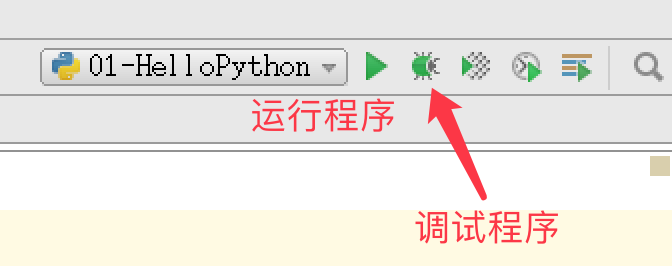
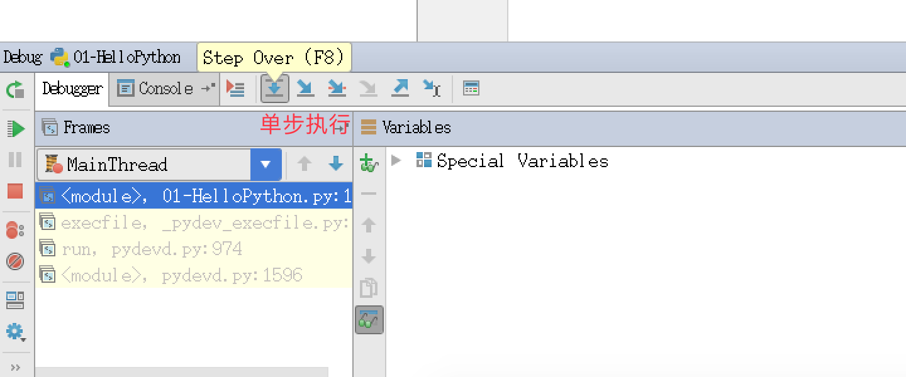

第一个 Python 程序
目标
- 第一个
HelloPython程序 Python 2.x与3.x版本简介- 执行
Python程序的三种方式- 解释器 ——
python/python3 - 交互式 ——
ipython - 集成开发环境 ——
PyCharm
- 解释器 ——
01. 第一个 HelloPython 程序
1.1 Python 源程序的基本概念
- Python 源程序就是一个特殊格式的文本文件，可以使用任意文本编辑软件做
Python的开发 - Python 程序的 文件扩展名 通常都是
.py
1.2 演练步骤
- 在桌面下，新建
认识Python目录 - 在
认识Python目录下新建01-HelloPython.py文件 - 使用 gedit 编辑
01-HelloPython.py并且输入以下内容：
1 | print("hello python") |
- 在终端中输入以下命令执行
01-HelloPython.py
1 | $ python 01-HelloPython.py |
python中我们学习的第一个 函数
1.3 演练扩展 —— 认识错误（BUG）
关于错误
- 编写的程序不能正常执行，或者执行的结果不是我们期望的
- 俗称
BUG，是程序员在开发时非常常见的，初学者常见错误的原因包括：- 手误
- 对已经学习过的知识理解还存在不足
- 对语言还有需要学习和提升的内容
- 在学习语言时，不仅要学会语言的语法，而且还要学会如何认识错误和解决错误的方法
每一个程序员都是在不断地修改错误中成长的
第一个演练中的常见错误
- 1> 手误，例如使用
pirnt("Hello world")
1 | NameError: name 'pirnt' is not defined |
- 2> 将多条
print写在一行
1 | SyntaxError: invalid syntax |
每行代码负责完成一个动作
- 3> 缩进错误
1 | IndentationError: unexpected indent |
- Python 是一个格式非常严格的程序设计语言
- 目前而言，大家记住每行代码前面都不要增加空格
- 4> python 2.x 默认不支持中文
目前市场上有两个 Python 的版本并存着，分别是 Python 2.x 和 Python 3.x
- Python 2.x 默认不支持中文，具体原因，等到介绍 字符编码 时给大家讲解
- Python 2.x 的解释器名称是 python
- Python 3.x 的解释器名称是 python3
1 | SyntaxError: Non-ASCII character '\xe4' in file 01-HelloPython.py on line 3, |
ASCII字符只包含256个字符，不支持中文- 有关字符编码的问题，后续会讲
单词列表
1 | * error 错误 |
02. Python 2.x 与 3.x 版本简介
目前市场上有两个 Python 的版本并存着，分别是 Python 2.x 和 Python 3.x
新的 Python 程序建议使用
Python 3.0版本的语法
- Python 2.x 是 过去的版本
- 解释器名称是 python
- Python 3.x 是 现在和未来 主流的版本
- 解释器名称是 python3
- 相对于
Python的早期版本，这是一个 较大的升级 - 为了不带入过多的累赘，
Python 3.0在设计的时候 没有考虑向下兼容- 许多早期
Python版本设计的程序都无法在Python 3.0上正常执行
- 许多早期
- Python 3.0 发布于 2008 年
- 到目前为止，Python 3.0 的稳定版本已经有很多年了
- Python 3.3 发布于 2012
- Python 3.4 发布于 2014
- Python 3.5 发布于 2015
- Python 3.6 发布于 2016
- 为了照顾现有的程序，官方提供了一个过渡版本 —— Python 2.6
- 基本使用了
Python 2.x的语法和库 - 同时考虑了向
Python 3.0的迁移，允许使用部分Python 3.0的语法与函数 - 2010 年中推出的
Python 2.7被确定为 最后一个Python 2.x 版本
- 基本使用了
提示：如果开发时，无法立即使用 Python 3.0（还有极少的第三方库不支持 3.0 的语法），建议
- 先使用
Python 3.0版本进行开发- 然后使用
Python 2.6、Python 2.7来执行，并且做一些兼容性的处理
03. 执行 Python 程序的三种方式
3.1. 解释器 python / python3
Python 的解释器
1 | # 使用 python 2.x 解释器 |
其他解释器（知道）
Python 的解释器 如今有多个语言的实现，包括：
CPython—— 官方版本的 C 语言实现Jython—— 可以运行在 Java 平台IronPython—— 可以运行在 .NET 和 Mono 平台PyPy—— Python 实现的，支持 JIT 即时编译
3.2. 交互式运行 Python 程序
- 直接在终端中运行解释器，而不输入要执行的文件名
- 在 Python 的
Shell中直接输入 Python 的代码，会立即看到程序执行结果
1) 交互式运行 Python 的优缺点
优点
- 适合于学习/验证 Python 语法或者局部代码
缺点
- 代码不能保存
- 不适合运行太大的程序
2) 退出 官方的解释器
1> 直接输入 exit()
1 | exit() |
2> 使用热键退出
在 python 解释器中，按热键 ctrl + d 可以退出解释器

3) IPython
- IPython 中 的 “I” 代表 交互 interactive
特点
- IPython 是一个 python 的 交互式 shell，比默认的
python shell好用得多- 支持自动补全
- 自动缩进
- 支持
bash shell命令 - 内置了许多很有用的功能和函数
- IPython 是基于 BSD 开源的
版本
- Python 2.x 使用的解释器是 ipython
- Python 3.x 使用的解释器是 ipython3
- 要退出解释器可以有以下两种方式：
1> 直接输入 exit
1 | In [1]: exit |
2> 使用热键退出
在 IPython 解释器中，按热键 ctrl + d，IPython 会询问是否退出解释器
IPython 的安装
1 | $ sudo apt install ipython |
3.3. Python 的 IDE —— PyCharm
1） 集成开发环境（IDE）
集成开发环境（IDE，Integrated Development Environment）—— 集成了开发软件需要的所有工具，一般包括以下工具：
- 图形用户界面
- 代码编辑器（支持 代码补全／自动缩进）
- 编译器／解释器
- 调试器（断点／单步执行）
- ……
2）PyCharm 介绍
PyCharm是 Python 的一款非常优秀的集成开发环境PyCharm除了具有一般 IDE 所必备功能外，还可以在Windows、Linux、macOS下使用PyCharm适合开发大型项目- 一个项目通常会包含 很多源文件
- 每个 源文件 的代码行数是有限的，通常在几百行之内
- 每个 源文件 各司其职，共同完成复杂的业务功能
3）PyCharm 快速体验
- 文件导航区域 能够 浏览／定位／打开 项目文件
- 文件编辑区域 能够 编辑 当前打开的文件
- 控制台区域 能够：
- 输出程序执行内容
- 跟踪调试代码的执行
- 右上角的 工具栏 能够 执行(SHIFT + F10) / 调试(SHIFT + F9) 代码

- 通过控制台上方的单步执行按钮(F8)，可以单步执行代码
